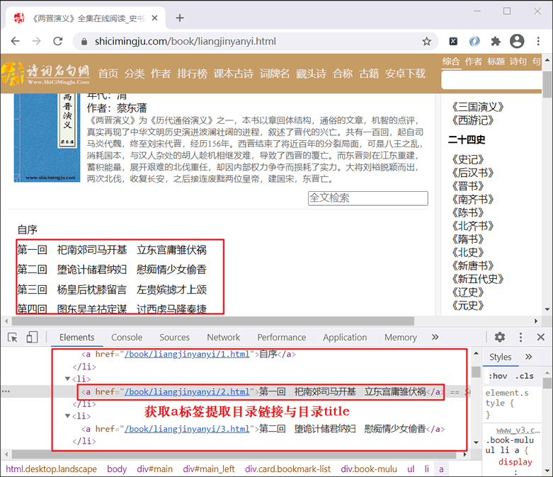

Pyhon爬虫下载小说
本节通过具体的爬虫程序，演示 BS4 解析库的实际应用。爬虫程序目标：下载诗词名句网（https://www.shicimingju.com/book/）《两晋演义》小说。
关于分析网页分过程，这里不再做详细介绍了，只要通读了前面的文章，那么关于如何分析网页，此时您应该了然于胸了。其实，无论您爬取什么类型的网站，分析过程总是相似的。
提取到 a 标签是解决本程序的重点，a 标签的页面代码结构如下所示：
下载详情页的 URL 也非常容易获得，它是由发起请求的 URL 与 a 标签的 herf 链接拼接而成。因此通过字符串拼接就可以获取下载详内容页的 URL。
关于分析网页分过程，这里不再做详细介绍了，只要通读了前面的文章，那么关于如何分析网页，此时您应该了然于胸了。其实，无论您爬取什么类型的网站，分析过程总是相似的。
案例简单分析
首先判网站属于静态网站，因此您的主要任务是分析网页元素的组成，然后使用 BS4 提取所需的信息。如下所示：

图1：网页元素分析
图1：网页元素分析
提取到 a 标签是解决本程序的重点，a 标签的页面代码结构如下所示：
<div class="book-mulu"> <ul> <li><a href="/book/liangjinyanyi/1.html">自序</a></li> <li><a href="/book/liangjinyanyi/2.html">第一回 祀南郊司马开基 立东宫庸雏伏祸</a></li> <li><a href="/book/liangjinyanyi/3.html">第二回 堕诡计储君纳妇 慰痴情少女偷香</a></li> ...从上述代码可以看出，a 标签包含了目录名称以及详情页的地址链接。那么如何获取 a 标签呢？经过简单分析后可知 a 标签属于 div > ul > li 的子节点，因此可以使用 BS4 的 select() 获取。如下所示：
list_name = soup.select('.book-mulu > ul > li > a')
上述代码的返回值是一个列表，列表中每一个元素都是一个 Tag 对象，类型为 <class 'bs4.element.Tag'>。下载详情页的 URL 也非常容易获得，它是由发起请求的 URL 与 a 标签的 herf 链接拼接而成。因此通过字符串拼接就可以获取下载详内容页的 URL。
https://www.shicimingju.com/book/liangjinyanyi/2.html https://www.shicimingju.com/book/liangjinyanyi/3.html最后一步是提取具体的内容。通过分析详情页的元素构成可知，我们想要的内容都包含在以下标签中：
<div class="chapter_content"> 具体内容 </div>因此使用 BS4 的 find() 方法就可以获取所需内容，如下所示：
artist = soup.find('div', class_='chapter_content')
之后把获取的内容写入到 txt 文件中就可以了。下面我使用之前学习过的 urllib 模块与 BS4 模块编写爬虫程序，这样才能做到温故而知新。
编写爬虫程序
代码如下所示，程序中已经做了详细的注释：
import urllib.request
import random
from bs4 import BeautifulSoup
import time
def request_html(url):
headers={'User-Agent':'Mozilla/5.0 (Windows NT 10.0; Win64; x64) AppleWebKit/537.36 (KHTML, like Gecko) Chrome/89.0.4389.90 Safari/537.36'}
request = urllib.request.Request(url, headers=headers)
return request
def parse_html(html, f):
# 生成soup对象
soup = BeautifulSoup(html, 'lxml')
# 查找所有的章节链接和标题内容
list_name = soup.select('.book-mulu > ul > li > a')
# 遍历每一个列表中的tag对象，获取链接个目录
for item in list_name:
# 获取链接
#item: <a href="/book/liangjinyanyi/1.html">自序</a>
#拼接目录链接,此处item类型为<class 'bs4.element.Tag'>，使用下面方法可以值获取href属性值
href = 'http://www.shicimingju.com' + item['href']
# 获取标题
title = item.text
print('正在下载:-**--%s--**-......' % title)
# 获取章节内容函数
text = get_text(href)
# 写入文件
f.write(title + '\n' + text)
print('结束下载:-**--%s--**-' % title)
time.sleep(random.uniform(0,1))
# 提取章节内容
def get_text(href):
#创建请求对象
request = request_html(href)
content = urllib.request.urlopen(request).read().decode('utf8')
soup = BeautifulSoup(content, 'lxml')
# 查找包含内容的tag--div
artist = soup.find('div', class_='chapter_content')
#获取tag标签中的文本内容
return artist.text
def run():
# 打开文件
f = open('两晋演义.txt', 'w', encoding='utf8')
url = 'http://www.shicimingju.com/book/liangjinyanyi.html'
# 构建请求对象
request = request_html(url)
# 发送请求，得到响应，转换为HTML对象
html = urllib.request.urlopen(request).read().decode('utf8')
# 解析内容
parse_html(html,f)
#关闭文件
f.close()
if __name__ == '__main__':
run()
程序运行结果：
正在下载:-**--自序--**-...... 结束下载:-**--自序--**- 正在下载:-**--第一回 祀南郊司马开基 立东宫庸雏伏祸--**-...... 结束下载:-**--第一回 祀南郊司马开基 立东宫庸雏伏祸--**- 正在下载:-**--第二回 堕诡计储君纳妇 慰痴情少女偷香--**-...... ....由于生成的 .txt 文件中内容过多，这里就不再做展示了。
关注公众号「站长严长生」，在手机上阅读所有教程，随时随地都能学习。内含一款搜索神器，免费下载全网书籍和视频。

微信扫码关注公众号